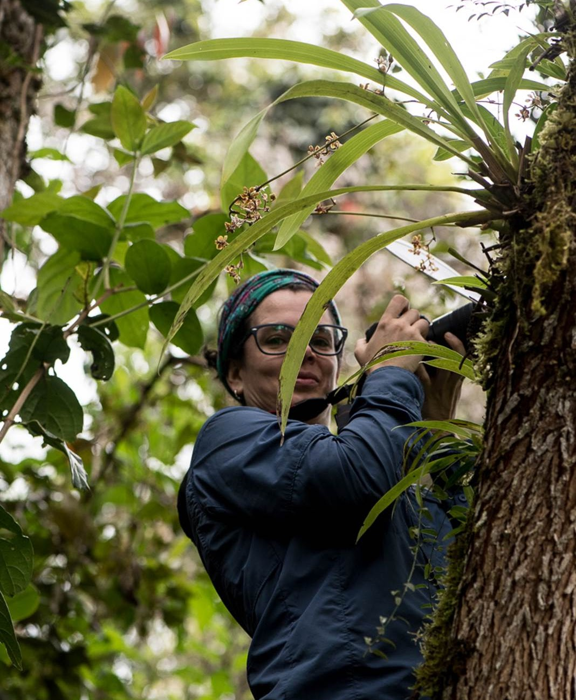

Principal Investigator - Tatiana Arias
All content, all the time.

I am classically trained botanist who has kept up with modern methods. I have more than 15 years of experience working in plant sciences, and I see myself contributing to the understanding of the diversity and evolution of neotropical epiphytic orchids. I have a PhD in Biological Sciences from The University of Missouri and two-year postdoctoral fellowship at The University of Hong Kong. Also, I have worked as the Scientific leader of The Center of Biological Research (CIB) and la Sociedad Colombiana de Orquideología (SCO) in Medellin, Colombia. I also taught in several universities in Colombia for seven years. The main goal of my research at Selby Gardens is to integrate multiple disciplines such as systematics, genomics, collection-based research, and natural history. This integrative approach will allow me to test hypotheses about key biogeographical, morphological, and functional traits that have given rise to this spectacular diversity. All the outcomes will be key to inform strategies that allow to preserve orchids.
Personal story
I learned to love biology and the natural world as a small child. I used to visit my father once a year in Bahia Solano, Choco, Colombia. There we spent our vacations exploring the jungle, and I made my decision to become a biologist because I wanted to know more about the biodiversity of my country. I applied to a public university, which is a highly competitive process in Colombia, and was admitted into the biology program at “La Universidad de Antioquia”, Medellin. I was involved in the university and activities related to school including teaching, research and discussion groups. I was among the top students in my department and I received honorable mentions for several semesters. I worked hard in my classes and suddenly biology became hugely fascinating to me. I shared a passion of biology with my best friends from college, and early in our careers we decided to focus on and learn everything we could about particular organisms. We formed study groups and explored Colombia looking for birds and reptiles, but eventually my interests gravitated toward plants.
The decision to study botany came when I took a plant morphology class with my former professor Ricardo Callejas, a world specialist for Piperaceae. I never will forget the passion with which he taught his classes and how exciting the thought of becoming a botanist was. I also got involved in the Student Association of Biological Sciences. We orchestrated meetings for students of biology in Colombia to showcase their research and we developed a collaborative project in Antioquia, Colombia with a network of reserves from the civilian society, focusing on conservation of natural resources. I participated as coordinator of the program protecting the marine turtle Dermochelis coriaceae, on the Atlantic side of the Colombian Choco and also took part in a project of regional hydrology, ecology, and biodiversity in Tambito, Cauca, Colombia. For the latter, a team of biology students from different parts of Colombia, together with several PhD students from King College in London, spent one month exploring the vegetation in the Tambito reserve. With this information, we completed the first part of a large-scale project modeling the biodiversity and monitoring conservation strategies in this area.
In La Universidad de Antioquia I had the opportunity to be a teaching assistant for several classes including ecology, botany and plant morphology. This experience was very important in my career because through it, together with the influence of Ricardo Callejas, I decided that I not only wanted to continue research but that I would also like to teach. Through my studies, I had the opportunity to travel around my country and personally experience the difficult life of country people who were always willing to share the few things they had. Also, I saw the reality of the social conflict in Colombia and the necessity to improve education at many levels.
In the last year of my undergraduate career, I worked on a research project that I designed with the help of my advisor that investigated plant architecture of roots and shoots of Vismia (Hypericaceae). I spent six months uncovering root systems and describing them with the goal of applying the basic concepts of plant architecture to an unexplored system such as roots of tropical trees. I also wanted to understand ontogenetic processes and morphology of flowering plants. For the final part of my research I traveled to the Institute of Natural Sciences at the National University in Bogota, Colombia. I spent six months writing my thesis with Dr. Favio Gonzalez, a world specialist for Aristolochiaceae. Additionally I took several courses at the graduate level and participated in the theoretical biology group. To live in a different city, learning from professors in a different school and interacting with graduate students as colleagues was a very refreshing and rewarding experience.
After I finished my undergraduate degree, I obtained a scholarship to travel to Costa Rica to participate in the Tropical Plant Systematics Course offered by the Organization for Tropical Studies. In this course I interacted with biology students from Latin America, and I made contacts that eventually created an opportunity here in the US. I traveled to St. Louis in 2004 with a scholarship from the Missouri Botanical Garden. I did a project on the taxonomy of Manekia, a neotropical genus in Piperaceae with morphological characters very unique within the family. Additionally in this trip I visited Dr. Joe Williams at UT Knoxville. During my visit Dr. Williams invited me to stay and work as his lab technician while I applied to school. I collaborated with him on several of his projects and learned novel microscopy techniques. I then applied to UT’s Ecology and Evolutionary Biology department for my masters. I have been working at UT with Dr. Williams since the spring of 2005, and I intend to complete my M.S. in the spring of 2007.
My master’s research was focused on the development and evolution of the female gametophyte and embryology in Manekia naranjoana. I was also working on some aspects of post-pollination events such as pollen tube germination and pollen tube growth, as well as early post-fertilization events. This research has been submitted to the American Journal of Botany for publication. I had two field seasons in Costa Rica doing pollination experiments in the canopy of a montane forest. While Manekia grows in my home country, the areas are very difficult to access and the civil war does not secure a good place to work, which is readily available in Costa Rica. At UT I was a teaching assistant in general botany for four semesters, and I have become comfortable teaching, learning and ultimately publishing in English.
The main goal of my PhD studies was to understand the patterns and mechanisms underlying mustards (Brassicaceae) speciation in the Mediterranean, specifically addressing the morphological variation achieved during the domestication of Cole crop (Brassica oleracea) members. Using molecular phylogenetics, diversification analysis, and historical biogeography, we recovered for first time a robust phylogeny for the Brassica species and wild relatives. Then, we found evidence about geologic events in the Mediterranean associated with the diversification of the group as well as the split of the Brassica crops. Our data suggest that the maternal genomes of the three diploid crop Brassicas (B. oleracea, B. rapa and B. nigra) are not closely related. Ancestors of these important crop species diversified throughout the Mediterranean before contacting each other again in secondary hybridization zones. This secondary contact is proposed to have occurred nearly 20 Mya after the initial divergence of these lineages. This is one of the few examples of deep coalescence hybridization within a group of crops. These results not only challenge currently accepted ideas about the origins and diversification of the tribe Brassiceae and the crop brassicas but also set the stage for future studies on the domestication of crops such as broccoli and kale.
As a postdoc I studied the molecular basis behind parallel evolution of pollination syndromes and floral development in the Annonaceae, a group of early-divergent angiosperms for which genomic tools are poorly developed. Specifically, I had become interested in the parallel evolution of deceit fly pollination in several Annonaceae genera. We were using a combination of field observations, comparative transcriptomics and flower development with the goal to identify candidate genes responsible for color, scent and morphological characters related to this pollination syndrome. During my postdoctoral experience I developed collaborations with other Asian and European scientists, and worked on diverse projects such as the molecular evolution of Acyl-CoA proteins, and the phylogenomics and diversification of selected Annonaceae groups.